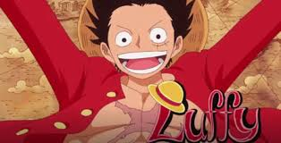
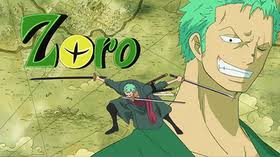
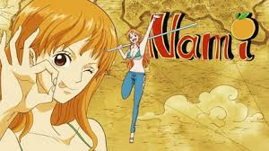
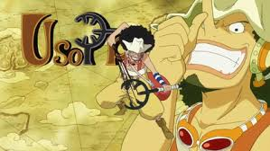
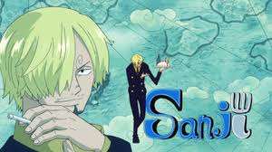
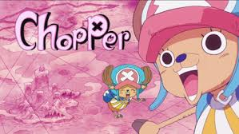
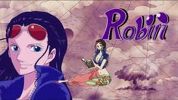
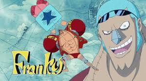
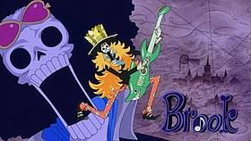

1.蒙其·D·魯夫:他是一個年輕的海賊，外號「草帽小子」，吃下「橡膠果實」而能讓身體像橡膠一樣伸縮自如的橡膠人,魯夫從東海出發前往偉大的航道，尋找傳說中海賊王哥爾·D·羅傑留下的大秘寶，集結夥伴組成草帽海賊團。他在旅途中結交了許多朋友，也樹立了許多敵人。
2.羅羅亞·索隆:是主角魯夫的第一位夥伴，草帽海賊團的戰鬥員。他立志成為世界最強的劍士，他以雙手持刀、嘴上再咬一把刀的三刀流戰鬥風格聞名，團員中第二號人物。
3.娜美:魯夫的第2位夥伴，草帽海賊團的航海士。她是位懂得製圖、精通氣象和航海的小偷，夢想是完成世界地圖。
4.騙人布:魯夫的第三位夥伴，草帽海賊團的狙擊手。雖然他個性悲觀懦弱，但他立志成為勇敢的海上戰士。
5.賓什莫克·香吉士:魯夫的第4位夥伴，草帽海賊團的廚師。以獨特的踢技戰鬥風格聞名，有著騎士道精神，熱愛女性，是個「擁女主義者」的紳士。
6.多尼多尼·喬巴:第5位夥伴，草帽海賊團的船醫。他是一隻有藍鼻子的馴鹿醫生，因為吃下的「人人果實」讓他得到了能變成獸人的特殊能力，夢想是透過學習醫術而讓自己成為萬靈藥。
7.妮可·羅賓:第6位夥伴，草帽海賊團的考古學家。羅賓是考古學之島「歐哈拉」的遺孤。她的夢想是透過找到散落在《ONE PIECE》世界中一種被稱為歷史本文的文獻，以查明被消除的歷史。
8.佛朗基:第7位夥伴，草帽海賊團的船匠。他是一名改造人，全身上下充滿各種機械裝置和武器。佛朗基本來是想製造出夢想之船，但千陽號完成後，只想看到自己製造的船能到達世界盡頭。
9.布魯克:第8位夥伴，草帽海賊團的音樂家。他的外表是一具爆炸頭骷髏，同時是一名劍擊高手。夢想是繞世界一圈後回到顛倒山雙子峽跟拉布重逢。
